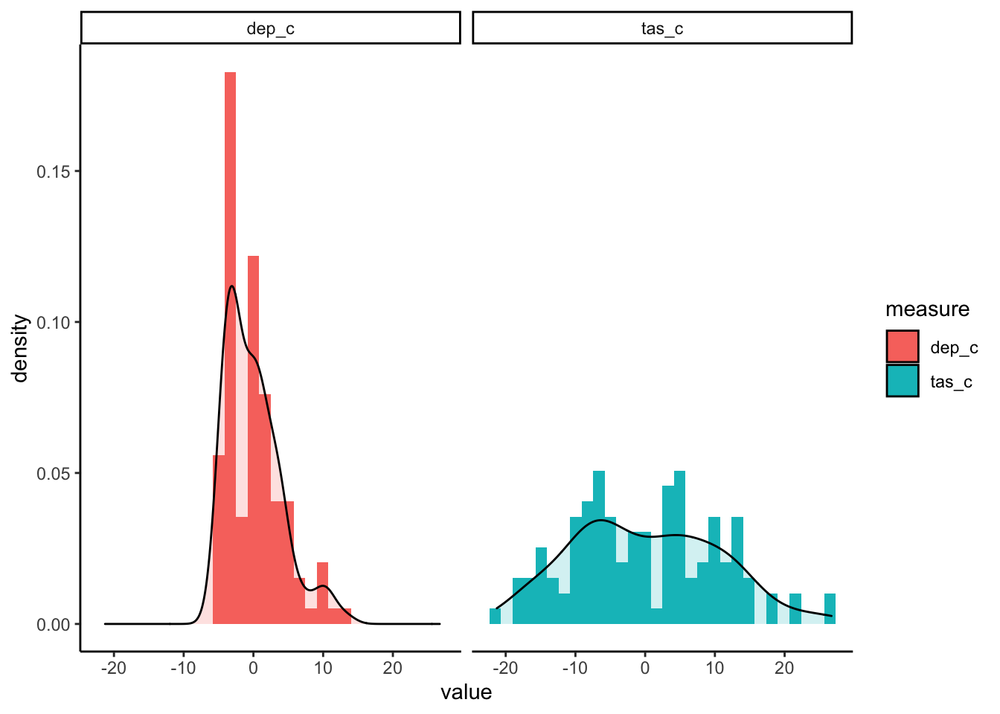
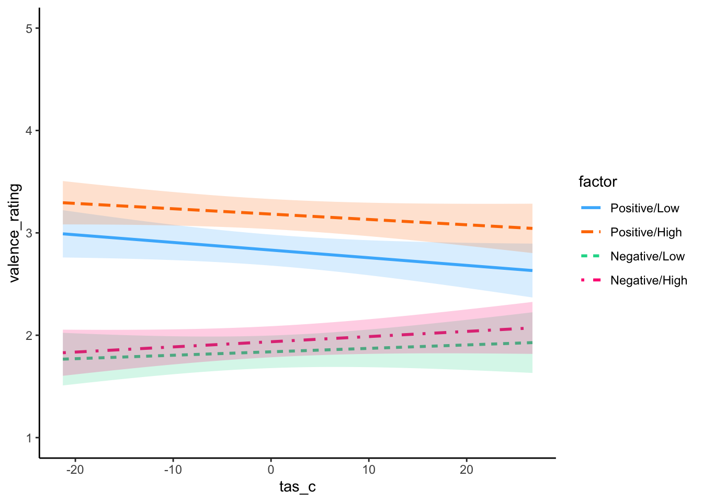
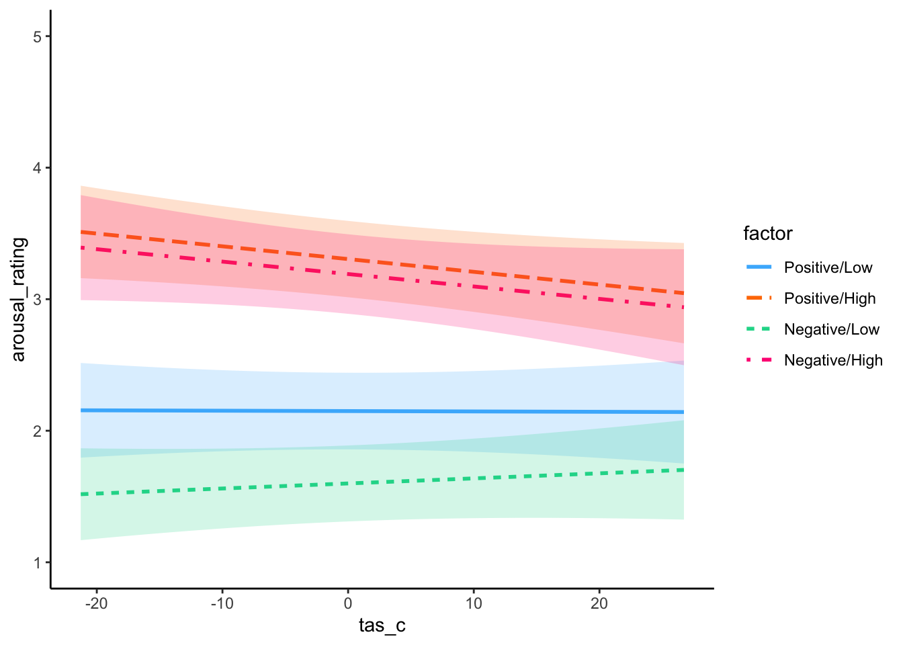
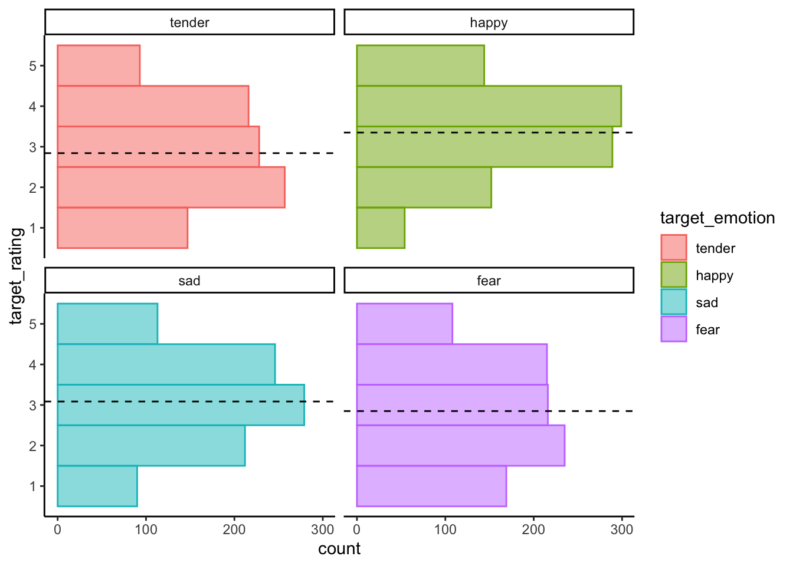
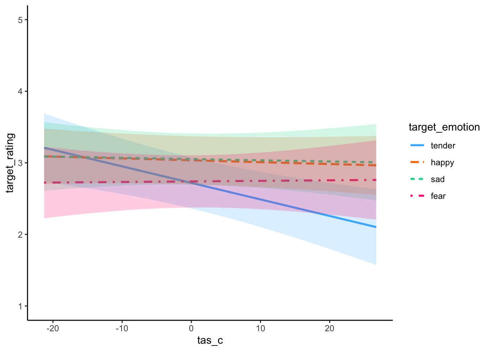

Last updated: 2020-07-31
Checks: 6 1
Knit directory: alexithymia_physiology_2019/
This reproducible R Markdown analysis was created with workflowr (version 1.6.2). The Checks tab describes the reproducibility checks that were applied when the results were created. The Past versions tab lists the development history.
The R Markdown file has unstaged changes. To know which version of the R Markdown file created these results, you’ll want to first commit it to the Git repo. If you’re still working on the analysis, you can ignore this warning. When you’re finished, you can run wflow_publish to commit the R Markdown file and build the HTML.
Great job! The global environment was empty. Objects defined in the global environment can affect the analysis in your R Markdown file in unknown ways. For reproduciblity it’s best to always run the code in an empty environment.
The command set.seed(20200723) was run prior to running the code in the R Markdown file. Setting a seed ensures that any results that rely on randomness, e.g. subsampling or permutations, are reproducible.
Great job! Recording the operating system, R version, and package versions is critical for reproducibility.
Nice! There were no cached chunks for this analysis, so you can be confident that you successfully produced the results during this run.
Great job! Using relative paths to the files within your workflowr project makes it easier to run your code on other machines.
Great! You are using Git for version control. Tracking code development and connecting the code version to the results is critical for reproducibility.
The results in this page were generated with repository version aef5ab2. See the Past versions tab to see a history of the changes made to the R Markdown and HTML files.
Note that you need to be careful to ensure that all relevant files for the analysis have been committed to Git prior to generating the results (you can use wflow_publish or wflow_git_commit). workflowr only checks the R Markdown file, but you know if there are other scripts or data files that it depends on. Below is the status of the Git repository when the results were generated:
Ignored files:
Ignored: .DS_Store
Ignored: .RData
Ignored: .Rhistory
Ignored: .Rproj.user/
Ignored: analysis/describe_cache/
Untracked files:
Untracked: analysis/emotion_differentiation.Rmd
Untracked: data/averaged_wide.csv
Untracked: data/icc_values.csv
Untracked: data_cleaning/emotion_differentiation.R
Unstaged changes:
Modified: analysis/self_report_responses.rmd
Note that any generated files, e.g. HTML, png, CSS, etc., are not included in this status report because it is ok for generated content to have uncommitted changes.
These are the previous versions of the repository in which changes were made to the R Markdown (analysis/self_report_responses.rmd) and HTML (docs/self_report_responses.html) files. If you’ve configured a remote Git repository (see ?wflow_git_remote), click on the hyperlinks in the table below to view the files as they were in that past version.
| File | Version | Author | Date | Message |
|---|---|---|---|---|
| Rmd | aef5ab2 | Joel larwood | 2020-07-29 | Model self report |
library(tidyverse)── Attaching packages ──────────────────────────────────────────────── tidyverse 1.3.0 ──✓ ggplot2 3.3.0 ✓ purrr 0.3.4
✓ tibble 3.0.1 ✓ dplyr 1.0.0
✓ tidyr 1.1.0 ✓ stringr 1.4.0
✓ readr 1.3.1 ✓ forcats 0.5.0── Conflicts ─────────────────────────────────────────────────── tidyverse_conflicts() ──
x dplyr::filter() masks stats::filter()
x dplyr::lag() masks stats::lag()library(lmerTest)Loading required package: lme4Loading required package: Matrix
Attaching package: 'Matrix'The following objects are masked from 'package:tidyr':
expand, pack, unpack
Attaching package: 'lmerTest'The following object is masked from 'package:lme4':
lmerThe following object is masked from 'package:stats':
steplibrary(afex)Registered S3 methods overwritten by 'car':
method from
influence.merMod lme4
cooks.distance.influence.merMod lme4
dfbeta.influence.merMod lme4
dfbetas.influence.merMod lme4************
Welcome to afex. For support visit: http://afex.singmann.science/- Functions for ANOVAs: aov_car(), aov_ez(), and aov_4()
- Methods for calculating p-values with mixed(): 'KR', 'S', 'LRT', and 'PB'
- 'afex_aov' and 'mixed' objects can be passed to emmeans() for follow-up tests
- NEWS: library('emmeans') now needs to be called explicitly!
- Get and set global package options with: afex_options()
- Set orthogonal sum-to-zero contrasts globally: set_sum_contrasts()
- For example analyses see: browseVignettes("afex")
************
Attaching package: 'afex'The following object is masked from 'package:lme4':
lmerIt is expected that alexithymia will moderate the relationship between affective category and affect ratings. Specifically we predicted that people high in alexithymia would make more neutral judgements of valence and arousal when the target valence of the song was negative.
We pre-registered a hypothesis that included only affective category and alexithymia. We have additionally provided alternative models that allowed for depression and song liking to be entered as control variables.
First I will center the data. All continuous variables will be grand mean centered.
self_report_analyse <- here::here(
"data",
"self_report_only.csv"
) %>%
read_csv() %>%
mutate(factor = fct_relevel(
factor,
"Positive/Low",
"Positive/High",
"Negative/Low",
"Negative/High"
)
)Warning: Missing column names filled in: 'X1' [1]Warning: Duplicated column names deduplicated: 'X1' => 'X1_1' [44]Parsed with column specification:
cols(
.default = col_double(),
gender = col_character(),
musichours = col_character(),
yearsplay = col_character(),
participant = col_character(),
song = col_character(),
valence_target = col_character(),
arousal_target = col_character(),
word = col_character(),
emotion_target = col_character(),
na = col_logical(),
factor = col_character()
)See spec(...) for full column specifications.self_report_analyse <- self_report_analyse %>%
mutate(
tas_c = tas - mean(tas, na.rm = TRUE),
dep_c = depression -mean(depression, na.rm = TRUE),
liking_c = liking - mean(liking, na.rm = TRUE)
)
self_report_analyse %>%
select(id,
contains("_c"),
-liking_c
) %>%
pivot_longer(
cols = -id,
names_to = "measure",
values_to = "value"
) %>%
mutate(measure = factor(measure))%>%
distinct(id, measure, value)%>%
ggplot(aes(x = value,
fill = measure)) +
geom_histogram(aes(y = ..density..)) +
geom_density(alpha = .2) +
facet_wrap(~measure) +
theme(legend.position = "none") +
theme_classic()`stat_bin()` using `bins = 30`. Pick better value with `binwidth`.
From the models below it can be seen that the best fitting model, which includes, alexithymia, was the model that included liking of the song.
v_hyp_model <- lmerTest::lmer(
formula = valence_rating ~ factor*tas_c + (1 + factor|id) + (1 | songmark),
data = self_report_analyse)
v_like_control <- lmerTest::lmer(
formula = valence_rating ~ factor*tas_c + factor*liking_c + (1 + factor|id) + (1 | songmark),
data = self_report_analyse)
v_dep_control <- lmerTest::lmer(
formula = valence_rating ~ factor*tas_c + factor*dep_c + (1 + factor|id) + (1 | songmark),
data = self_report_analyse)
v_all_control <- lmerTest::lmer(
formula = valence_rating ~ factor*tas_c + factor*dep_c + factor*liking_c + (1 + factor|id) + (1 | songmark),
data = self_report_analyse)
sjPlot::tab_model(
v_hyp_model,
v_like_control,
v_dep_control,
v_all_control,
show.est = FALSE,
show.std = TRUE,
show.aic = TRUE
)| valence rating | valence rating | valence rating | valence rating | |||||||||
|---|---|---|---|---|---|---|---|---|---|---|---|---|
| Predictors | std. Beta | standardized CI | p | std. Beta | standardized CI | p | std. Beta | standardized CI | p | std. Beta | standardized CI | p |
| (Intercept) | 0.46 | 0.25 – 0.67 | <0.001 | 0.26 | 0.14 – 0.38 | <0.001 | 0.46 | 0.25 – 0.67 | <0.001 | 0.26 | 0.14 – 0.38 | <0.001 |
| factor [Positive/High] | 0.34 | 0.07 – 0.62 | 0.013 | 0.28 | 0.12 – 0.43 | 0.001 | 0.34 | 0.07 – 0.62 | 0.013 | 0.28 | 0.12 – 0.43 | 0.001 |
| factor [Negative/Low] | -1.05 | -1.33 – -0.77 | <0.001 | -0.78 | -0.95 – -0.62 | <0.001 | -1.05 | -1.33 – -0.77 | <0.001 | -0.78 | -0.95 – -0.62 | <0.001 |
| factor [Negative/High] | -1.13 | -1.41 – -0.84 | <0.001 | -0.70 | -0.87 – -0.54 | <0.001 | -1.13 | -1.41 – -0.84 | <0.001 | -0.70 | -0.87 – -0.54 | <0.001 |
| tas_c | -0.09 | -0.20 – 0.01 | 0.082 | -0.06 | -0.13 – 0.01 | 0.071 | -0.14 | -0.26 – -0.02 | 0.021 | -0.09 | -0.16 – -0.01 | 0.021 |
|
factor [Positive/High] * tas_c |
0.08 | -0.01 – 0.17 | 0.085 | 0.02 | -0.05 – 0.09 | 0.592 | 0.14 | 0.04 – 0.24 | 0.006 | 0.04 | -0.03 – 0.12 | 0.274 |
|
factor [Negative/Low] * tas_c |
0.12 | 0.02 – 0.23 | 0.021 | 0.09 | -0.00 – 0.18 | 0.054 | 0.14 | 0.02 – 0.26 | 0.019 | 0.12 | 0.02 – 0.22 | 0.019 |
|
factor [Negative/High] * tas_c |
0.14 | 0.02 – 0.27 | 0.026 | 0.10 | 0.02 – 0.19 | 0.021 | 0.18 | 0.05 – 0.32 | 0.009 | 0.13 | 0.04 – 0.23 | 0.008 |
| liking_c | 0.64 | 0.60 – 0.68 | <0.001 | 0.64 | 0.59 – 0.68 | <0.001 | ||||||
|
factor [Positive/High] * liking_c |
-0.05 | -0.10 – 0.01 | 0.116 | -0.05 | -0.10 – 0.01 | 0.115 | ||||||
|
factor [Negative/Low] * liking_c |
-0.24 | -0.31 – -0.18 | <0.001 | -0.24 | -0.30 – -0.18 | <0.001 | ||||||
|
factor [Negative/High] * liking_c |
-0.25 | -0.31 – -0.18 | <0.001 | -0.24 | -0.31 – -0.18 | <0.001 | ||||||
| dep_c | 0.10 | -0.02 – 0.22 | 0.091 | 0.06 | -0.02 – 0.13 | 0.119 | ||||||
|
factor [Positive/High] * dep_c |
-0.13 | -0.23 – -0.03 | 0.009 | -0.05 | -0.13 – 0.02 | 0.159 | ||||||
|
factor [Negative/Low] * dep_c |
-0.04 | -0.15 – 0.08 | 0.522 | -0.07 | -0.17 – 0.03 | 0.160 | ||||||
|
factor [Negative/High] * dep_c |
-0.10 | -0.23 – 0.04 | 0.175 | -0.07 | -0.16 – 0.03 | 0.173 | ||||||
| Random Effects | ||||||||||||
| σ2 | 0.53 | 0.35 | 0.53 | 0.35 | ||||||||
| τ00 | 0.50 id | 0.16 id | 0.49 id | 0.16 id | ||||||||
| 0.06 songmark | 0.02 songmark | 0.06 songmark | 0.02 songmark | |||||||||
| τ11 | 0.27 id.factorPositive/High | 0.12 id.factorPositive/High | 0.25 id.factorPositive/High | 0.12 id.factorPositive/High | ||||||||
| 0.41 id.factorNegative/Low | 0.28 id.factorNegative/Low | 0.41 id.factorNegative/Low | 0.28 id.factorNegative/Low | |||||||||
| 0.64 id.factorNegative/High | 0.26 id.factorNegative/High | 0.63 id.factorNegative/High | 0.26 id.factorNegative/High | |||||||||
| ρ01 | -0.55 id.factorPositive/High | -0.60 id.factorPositive/High | -0.53 id.factorPositive/High | -0.59 id.factorPositive/High | ||||||||
| -0.62 id.factorNegative/Low | -0.51 id.factorNegative/Low | -0.62 id.factorNegative/Low | -0.49 id.factorNegative/Low | |||||||||
| -0.74 id.factorNegative/High | -0.69 id.factorNegative/High | -0.74 id.factorNegative/High | -0.68 id.factorNegative/High | |||||||||
| ICC | 0.45 | 0.33 | 0.45 | 0.33 | ||||||||
| N | 119 id | 109 id | 119 id | 109 id | ||||||||
| 16 songmark | 16 songmark | 16 songmark | 16 songmark | |||||||||
| Observations | 3762 | 3442 | 3762 | 3442 | ||||||||
| Marginal R2 / Conditional R2 | 0.410 / 0.675 | 0.661 / 0.773 | 0.412 / 0.676 | 0.660 / 0.774 | ||||||||
| AIC | 9203.488 | 6919.627 | 9230.769 | 6952.843 | ||||||||
interactions::sim_slopes(
model = v_like_control,
pred = tas_c,
modx = factor
)Warning: Johnson-Neyman intervals are not available for factor moderators.SIMPLE SLOPES ANALYSIS
Slope of tas_c when factor = Negative/High:
Est. S.E. t val. p
------ ------ -------- ------
0.01 0.00 1.28 0.20
Slope of tas_c when factor = Negative/Low:
Est. S.E. t val. p
------ ------ -------- ------
0.00 0.00 0.70 0.49
Slope of tas_c when factor = Positive/High:
Est. S.E. t val. p
------- ------ -------- ------
-0.01 0.00 -1.43 0.16
Slope of tas_c when factor = Positive/Low:
Est. S.E. t val. p
------- ------ -------- ------
-0.01 0.00 -1.81 0.07interactions::interact_plot(
model = v_like_control,
pred = tas_c,
modx = factor,
interval = TRUE
) +
ylim(1,5) +
theme_classic()
From the models below it can be seen that the best fitting model, which includes, alexithymia, was the model that included liking of the song.
a_hyp_model <- lmerTest::lmer(
formula = arousal_rating ~ factor*tas_c + (1 + factor|id) + (1 | songmark),
data = self_report_analyse)
a_like_control <- lmerTest::lmer(
formula = arousal_rating ~ factor*tas_c + factor*liking_c + (1 + factor|id) + (1 | songmark),
data = self_report_analyse)
a_dep_control <- lmerTest::lmer(
formula = arousal_rating ~ factor*tas_c + factor*dep_c + (1 + factor|id) + (1 | songmark),
data = self_report_analyse)
a_all_control <- lmerTest::lmer(
formula = arousal_rating ~ factor*tas_c + factor*dep_c + factor*liking_c + (1 + factor|id) + (1 | songmark),
data = self_report_analyse)
sjPlot::tab_model(
a_hyp_model,
a_like_control,
a_dep_control,
a_all_control,
show.est = FALSE,
show.std = TRUE,
show.aic = TRUE
)| arousal rating | arousal rating | arousal rating | arousal rating | |||||||||
|---|---|---|---|---|---|---|---|---|---|---|---|---|
| Predictors | std. Beta | standardized CI | p | std. Beta | standardized CI | p | std. Beta | standardized CI | p | std. Beta | standardized CI | p |
| (Intercept) | -0.28 | -0.54 – -0.01 | <0.001 | -0.36 | -0.60 – -0.12 | <0.001 | -0.28 | -0.54 – -0.01 | <0.001 | -0.36 | -0.60 – -0.12 | <0.001 |
| factor [Positive/High] | 1.08 | 0.71 – 1.44 | <0.001 | 0.95 | 0.62 – 1.27 | <0.001 | 1.08 | 0.71 – 1.44 | <0.001 | 0.94 | 0.62 – 1.27 | <0.001 |
| factor [Negative/Low] | -0.57 | -0.93 – -0.21 | 0.002 | -0.45 | -0.77 – -0.13 | 0.006 | -0.57 | -0.93 – -0.21 | 0.002 | -0.45 | -0.77 – -0.13 | 0.006 |
| factor [Negative/High] | 0.61 | 0.24 – 0.98 | 0.001 | 0.85 | 0.52 – 1.19 | <0.001 | 0.61 | 0.24 – 0.98 | 0.001 | 0.85 | 0.52 – 1.19 | <0.001 |
| tas_c | -0.02 | -0.12 – 0.07 | 0.624 | -0.00 | -0.09 – 0.08 | 0.956 | -0.04 | -0.14 – 0.07 | 0.521 | 0.01 | -0.09 – 0.10 | 0.898 |
|
factor [Positive/High] * tas_c |
-0.02 | -0.11 – 0.06 | 0.599 | -0.08 | -0.16 – -0.00 | 0.044 | -0.02 | -0.11 – 0.08 | 0.733 | -0.10 | -0.19 – -0.02 | 0.020 |
|
factor [Negative/Low] * tas_c |
0.06 | -0.02 – 0.13 | 0.139 | 0.04 | -0.03 – 0.10 | 0.312 | 0.06 | -0.02 – 0.14 | 0.135 | 0.04 | -0.03 – 0.12 | 0.277 |
|
factor [Negative/High] * tas_c |
-0.04 | -0.15 – 0.06 | 0.418 | -0.08 | -0.19 – 0.03 | 0.153 | -0.04 | -0.16 – 0.08 | 0.475 | -0.09 | -0.21 – 0.03 | 0.143 |
| liking_c | 0.30 | 0.25 – 0.35 | <0.001 | 0.30 | 0.25 – 0.35 | <0.001 | ||||||
|
factor [Positive/High] * liking_c |
0.15 | 0.09 – 0.22 | <0.001 | 0.15 | 0.09 – 0.22 | <0.001 | ||||||
|
factor [Negative/Low] * liking_c |
-0.10 | -0.16 – -0.04 | 0.002 | -0.10 | -0.16 – -0.04 | 0.002 | ||||||
|
factor [Negative/High] * liking_c |
-0.01 | -0.08 – 0.06 | 0.720 | -0.01 | -0.08 – 0.06 | 0.708 | ||||||
| dep_c | 0.03 | -0.08 – 0.13 | 0.643 | -0.02 | -0.11 – 0.07 | 0.682 | ||||||
|
factor [Positive/High] * dep_c |
-0.01 | -0.11 – 0.08 | 0.766 | 0.05 | -0.04 – 0.14 | 0.244 | ||||||
|
factor [Negative/Low] * dep_c |
-0.02 | -0.10 – 0.07 | 0.697 | -0.02 | -0.09 – 0.06 | 0.681 | ||||||
|
factor [Negative/High] * dep_c |
-0.00 | -0.12 – 0.12 | 0.978 | 0.03 | -0.09 – 0.14 | 0.674 | ||||||
| Random Effects | ||||||||||||
| σ2 | 0.47 | 0.40 | 0.47 | 0.40 | ||||||||
| τ00 | 0.37 id | 0.25 id | 0.38 id | 0.25 id | ||||||||
| 0.10 songmark | 0.08 songmark | 0.10 songmark | 0.08 songmark | |||||||||
| τ11 | 0.23 id.factorPositive/High | 0.16 id.factorPositive/High | 0.24 id.factorPositive/High | 0.16 id.factorPositive/High | ||||||||
| 0.13 id.factorNegative/Low | 0.09 id.factorNegative/Low | 0.13 id.factorNegative/Low | 0.10 id.factorNegative/Low | |||||||||
| 0.42 id.factorNegative/High | 0.39 id.factorNegative/High | 0.43 id.factorNegative/High | 0.39 id.factorNegative/High | |||||||||
| ρ01 | -0.31 id.factorPositive/High | -0.48 id.factorPositive/High | -0.31 id.factorPositive/High | -0.48 id.factorPositive/High | ||||||||
| -0.55 id.factorNegative/Low | -0.44 id.factorNegative/Low | -0.55 id.factorNegative/Low | -0.44 id.factorNegative/Low | |||||||||
| -0.36 id.factorNegative/High | -0.38 id.factorNegative/High | -0.36 id.factorNegative/High | -0.38 id.factorNegative/High | |||||||||
| ICC | 0.51 | 0.46 | 0.51 | 0.46 | ||||||||
| N | 119 id | 109 id | 119 id | 109 id | ||||||||
| 16 songmark | 16 songmark | 16 songmark | 16 songmark | |||||||||
| Observations | 3762 | 3442 | 3762 | 3442 | ||||||||
| Marginal R2 / Conditional R2 | 0.380 / 0.698 | 0.485 / 0.723 | 0.380 / 0.698 | 0.484 / 0.723 | ||||||||
| AIC | 8717.583 | 7429.645 | 8751.943 | 7463.383 | ||||||||
The simple slopes additionally reveal that high alexithymia was related to lower arousal ratings when the arousal was high and the valence negative
interactions::sim_slopes(
model = a_like_control,
pred = tas_c,
modx = factor
)Warning: Johnson-Neyman intervals are not available for factor moderators.SIMPLE SLOPES ANALYSIS
Slope of tas_c when factor = Negative/High:
Est. S.E. t val. p
------- ------ -------- ------
-0.01 0.01 -1.53 0.13
Slope of tas_c when factor = Negative/Low:
Est. S.E. t val. p
------ ------ -------- ------
0.00 0.00 0.82 0.41
Slope of tas_c when factor = Positive/High:
Est. S.E. t val. p
------- ------ -------- ------
-0.01 0.00 -2.05 0.04
Slope of tas_c when factor = Positive/Low:
Est. S.E. t val. p
------- ------ -------- ------
-0.00 0.01 -0.05 0.96interactions::interact_plot(
model = a_like_control,
pred = tas_c,
modx = factor,
interval = TRUE
) +
ylim(1,5) +
theme_classic()
The orignal stimulus set found the 2D valence model to better fit the data than descrete emotion labels. However we also collected ratings of the target emotions of the songs.
Below I recode the affective category into target emotions with the following correspondence - Positive Valence / Low Arousal = Tender - Positive Valence / High Arousal = Happy - Negative Valence / Low Arousal = Sad - Negative Valence / High Arousal = Fear
target_data <- self_report_analyse %>%
mutate(
target_emotion = as.factor(
recode(
factor,
"Positive/High" = "happy",
"Negative/High" = "fear",
"Negative/Low" = "sad",
"Positive/Low" = "tender")),
target_rating = if_else(
target_emotion == "fear",
scared,
if_else(
target_emotion == "sad",
sad,
if_else(
target_emotion == "tender",
tender,
happy)
)
)
) The descriptives for each can be seen here
means <- target_data %>%
group_by(target_emotion) %>%
summarise(mean = mean(target_rating))`summarise()` ungrouping output (override with `.groups` argument)target_data %>%
ggplot(
aes(x = target_rating,
color = target_emotion,
fill = target_emotion)
) +
geom_histogram(alpha = .5,
bins = 5,
binwidth = 1) +
geom_vline(data = means,
aes(xintercept = mean),
linetype = "dashed") +
facet_wrap(~target_emotion) +
theme(legend.position = 'none') +
theme_classic() +
coord_flip()
We can again see the best fitting model is the model that included liking along with alexithymia
emotion_tas_model <- lmerTest::lmer(
formula = target_rating ~ target_emotion*tas_c + (1 + target_emotion|id) + (1 | songmark),
data = target_data)
emotion_like_control <- lmerTest::lmer(
formula = target_rating ~ target_emotion*tas_c + target_emotion*liking_c + (1 + target_emotion|id) + (1 | songmark),
data = target_data)
emotion_dep_control <- lmerTest::lmer(
formula = target_rating ~ target_emotion*tas_c + target_emotion*dep_c + (1 + target_emotion|id) + (1 | songmark),
data = target_data)
emotion_all_control <- lmerTest::lmer(
formula = target_rating ~ target_emotion*tas_c + target_emotion*dep_c + target_emotion*liking_c + (1 + target_emotion|id) + (1 | songmark),
data = target_data)
sjPlot::tab_model(
emotion_tas_model,
emotion_like_control,
emotion_dep_control,
emotion_all_control,
show.est = FALSE,
show.std = TRUE,
show.aic = TRUE
)| target rating | target rating | target rating | target rating | |||||||||
|---|---|---|---|---|---|---|---|---|---|---|---|---|
| Predictors | std. Beta | standardized CI | p | std. Beta | standardized CI | p | std. Beta | standardized CI | p | std. Beta | standardized CI | p |
| (Intercept) | -0.15 | -0.49 – 0.18 | <0.001 | -0.24 | -0.54 – 0.05 | <0.001 | -0.15 | -0.49 – 0.18 | <0.001 | -0.24 | -0.54 – 0.05 | <0.001 |
| target_emotion [happy] | 0.42 | -0.04 – 0.87 | 0.071 | 0.26 | -0.14 – 0.66 | 0.199 | 0.42 | -0.03 – 0.87 | 0.070 | 0.26 | -0.14 – 0.66 | 0.200 |
| target_emotion [sad] | 0.21 | -0.25 – 0.66 | 0.376 | 0.28 | -0.13 – 0.68 | 0.182 | 0.21 | -0.25 – 0.66 | 0.376 | 0.27 | -0.13 – 0.68 | 0.184 |
| target_emotion [fear] | 0.01 | -0.45 – 0.47 | 0.976 | 0.02 | -0.39 – 0.43 | 0.935 | 0.01 | -0.45 – 0.47 | 0.976 | 0.02 | -0.39 – 0.43 | 0.939 |
| tas_c | -0.21 | -0.35 – -0.07 | 0.003 | -0.20 | -0.33 – -0.07 | 0.002 | -0.28 | -0.43 – -0.13 | <0.001 | -0.26 | -0.40 – -0.12 | <0.001 |
|
target_emotion [happy] * tas_c |
0.22 | 0.08 – 0.36 | 0.002 | 0.18 | 0.05 – 0.30 | 0.007 | 0.30 | 0.15 – 0.44 | <0.001 | 0.22 | 0.08 – 0.36 | 0.002 |
|
target_emotion [sad] * tas_c |
0.21 | 0.06 – 0.35 | 0.005 | 0.18 | 0.04 – 0.33 | 0.013 | 0.24 | 0.07 – 0.40 | 0.004 | 0.19 | 0.03 – 0.35 | 0.021 |
|
target_emotion [fear] * tas_c |
0.23 | 0.07 – 0.38 | 0.004 | 0.21 | 0.05 – 0.36 | 0.010 | 0.30 | 0.12 – 0.47 | 0.001 | 0.27 | 0.09 – 0.44 | 0.002 |
| liking_c | 0.31 | 0.24 – 0.37 | <0.001 | 0.31 | 0.24 – 0.37 | <0.001 | ||||||
|
target_emotion [happy] * liking_c |
0.25 | 0.16 – 0.33 | <0.001 | 0.25 | 0.17 – 0.34 | <0.001 | ||||||
|
target_emotion [sad] * liking_c |
-0.33 | -0.42 – -0.24 | <0.001 | -0.33 | -0.43 – -0.24 | <0.001 | ||||||
|
target_emotion [fear] * liking_c |
-0.46 | -0.55 – -0.37 | <0.001 | -0.46 | -0.55 – -0.37 | <0.001 | ||||||
| dep_c | 0.16 | 0.01 – 0.31 | 0.042 | 0.13 | -0.01 – 0.27 | 0.059 | ||||||
|
target_emotion [happy] * dep_c |
-0.17 | -0.32 – -0.03 | 0.022 | -0.11 | -0.25 – 0.04 | 0.143 | ||||||
|
target_emotion [sad] * dep_c |
-0.06 | -0.22 – 0.10 | 0.437 | -0.02 | -0.18 – 0.15 | 0.842 | ||||||
|
target_emotion [fear] * dep_c |
-0.16 | -0.33 – 0.01 | 0.068 | -0.14 | -0.31 – 0.03 | 0.118 | ||||||
| Random Effects | ||||||||||||
| σ2 | 0.72 | 0.65 | 0.72 | 0.65 | ||||||||
| τ00 | 0.78 id | 0.59 id | 0.75 id | 0.57 id | ||||||||
| 0.14 songmark | 0.11 songmark | 0.14 songmark | 0.11 songmark | |||||||||
| τ11 | 0.66 id.target_emotionhappy | 0.52 id.target_emotionhappy | 0.63 id.target_emotionhappy | 0.51 id.target_emotionhappy | ||||||||
| 0.77 id.target_emotionsad | 0.72 id.target_emotionsad | 0.77 id.target_emotionsad | 0.73 id.target_emotionsad | |||||||||
| 0.92 id.target_emotionfear | 0.84 id.target_emotionfear | 0.90 id.target_emotionfear | 0.83 id.target_emotionfear | |||||||||
| ρ01 | -0.73 id.target_emotionhappy | -0.86 id.target_emotionhappy | -0.72 id.target_emotionhappy | -0.85 id.target_emotionhappy | ||||||||
| -0.62 id.target_emotionsad | -0.54 id.target_emotionsad | -0.62 id.target_emotionsad | -0.55 id.target_emotionsad | |||||||||
| -0.63 id.target_emotionfear | -0.53 id.target_emotionfear | -0.62 id.target_emotionfear | -0.51 id.target_emotionfear | |||||||||
| ICC | 0.51 | 0.49 | 0.50 | 0.49 | ||||||||
| N | 119 id | 109 id | 119 id | 109 id | ||||||||
| 16 songmark | 16 songmark | 16 songmark | 16 songmark | |||||||||
| Observations | 3762 | 3442 | 3762 | 3442 | ||||||||
| Marginal R2 / Conditional R2 | 0.039 / 0.525 | 0.134 / 0.557 | 0.046 / 0.527 | 0.140 / 0.559 | ||||||||
| AIC | 10383.351 | 9138.443 | 10408.175 | 9164.853 | ||||||||
The simple slopes additionally reveal that high alexithymia was related to lower arousal ratings when the arousal was high and the valence negative.
From the slopes we can see that alexithymia only influenced that ratings of tender songs.
interactions::sim_slopes(
model = emotion_like_control,
pred = tas_c,
modx = target_emotion
)Warning: Johnson-Neyman intervals are not available for factor moderators.SIMPLE SLOPES ANALYSIS
Slope of tas_c when target_emotion = fear:
Est. S.E. t val. p
------ ------ -------- ------
0.00 0.01 0.10 0.92
Slope of tas_c when target_emotion = sad:
Est. S.E. t val. p
------- ------ -------- ------
-0.00 0.01 -0.22 0.82
Slope of tas_c when target_emotion = happy:
Est. S.E. t val. p
------- ------ -------- ------
-0.00 0.00 -0.58 0.56
Slope of tas_c when target_emotion = tender:
Est. S.E. t val. p
------- ------ -------- ------
-0.02 0.01 -3.07 0.00interactions::interact_plot(
model = emotion_like_control,
pred = tas_c,
modx = target_emotion,
interval = TRUE
) +
ylim(1,5) +
theme_classic()
sessionInfo()R version 3.6.3 (2020-02-29)
Platform: x86_64-apple-darwin15.6.0 (64-bit)
Running under: macOS Catalina 10.15.4
Matrix products: default
BLAS: /Library/Frameworks/R.framework/Versions/3.6/Resources/lib/libRblas.0.dylib
LAPACK: /Library/Frameworks/R.framework/Versions/3.6/Resources/lib/libRlapack.dylib
locale:
[1] en_AU.UTF-8/en_AU.UTF-8/en_AU.UTF-8/C/en_AU.UTF-8/en_AU.UTF-8
attached base packages:
[1] stats graphics grDevices utils datasets methods base
other attached packages:
[1] afex_0.27-2 lmerTest_3.1-2 lme4_1.1-23 Matrix_1.2-18
[5] forcats_0.5.0 stringr_1.4.0 dplyr_1.0.0 purrr_0.3.4
[9] readr_1.3.1 tidyr_1.1.0 tibble_3.0.1 ggplot2_3.3.0
[13] tidyverse_1.3.0
loaded via a namespace (and not attached):
[1] minqa_1.2.4 colorspace_1.4-1 ellipsis_0.3.1
[4] rio_0.5.16 sjlabelled_1.1.3 rprojroot_1.3-2
[7] snakecase_0.11.0 estimability_1.3 parameters_0.6.0
[10] fs_1.3.2 rstudioapi_0.11 farver_2.0.3
[13] fansi_0.4.1 mvtnorm_1.1-0 lubridate_1.7.9
[16] xml2_1.3.2 splines_3.6.3 knitr_1.28
[19] sjmisc_2.8.4 jsonlite_1.7.0 workflowr_1.6.2
[22] nloptr_1.2.2.1 ggeffects_0.14.2 broom_0.5.5
[25] dbplyr_1.4.2 effectsize_0.2.0 compiler_3.6.3
[28] httr_1.4.1 sjstats_0.17.9 emmeans_1.4.5
[31] backports_1.1.5 assertthat_0.2.1 cli_2.0.2
[34] later_1.0.0 htmltools_0.4.0 tools_3.6.3
[37] coda_0.19-3 gtable_0.3.0 glue_1.4.1
[40] reshape2_1.4.3 Rcpp_1.0.5 carData_3.0-3
[43] cellranger_1.1.0 vctrs_0.3.1 sjPlot_2.8.3
[46] nlme_3.1-144 insight_0.8.2 xfun_0.12
[49] openxlsx_4.1.4 rvest_0.3.5 lifecycle_0.2.0
[52] statmod_1.4.34 MASS_7.3-51.5 scales_1.1.0
[55] hms_0.5.3 promises_1.1.0 parallel_3.6.3
[58] yaml_2.2.1 curl_4.3 pander_0.6.3
[61] stringi_1.4.6 bayestestR_0.5.3 boot_1.3-24
[64] zip_2.0.4 interactions_1.1.3 rlang_0.4.6
[67] pkgconfig_2.0.3 evaluate_0.14 lattice_0.20-38
[70] labeling_0.3 tidyselect_1.1.0 here_0.1
[73] plyr_1.8.6 magrittr_1.5 R6_2.4.1
[76] generics_0.0.2 DBI_1.1.0 pillar_1.4.4
[79] haven_2.2.0 whisker_0.4 foreign_0.8-75
[82] withr_2.1.2 jtools_2.0.3 abind_1.4-5
[85] performance_0.4.4 modelr_0.1.6 crayon_1.3.4
[88] car_3.0-7 rmarkdown_2.1 grid_3.6.3
[91] readxl_1.3.1 data.table_1.12.8 git2r_0.26.1
[94] reprex_0.3.0 digest_0.6.25 xtable_1.8-4
[97] httpuv_1.5.2 numDeriv_2016.8-1.1 munsell_0.5.0